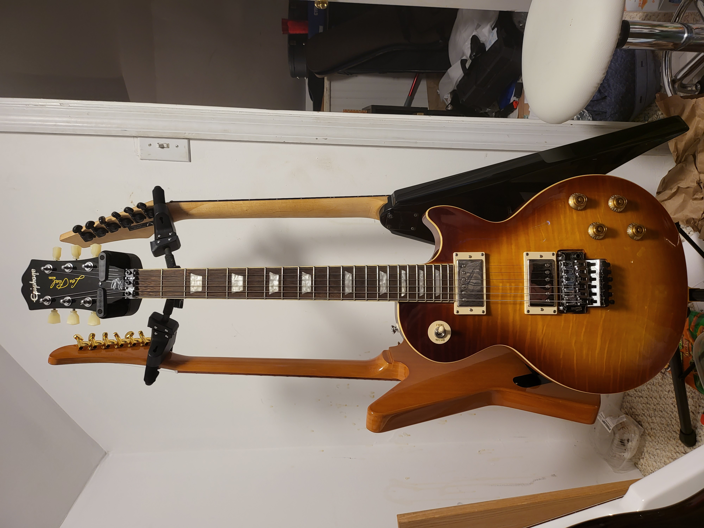
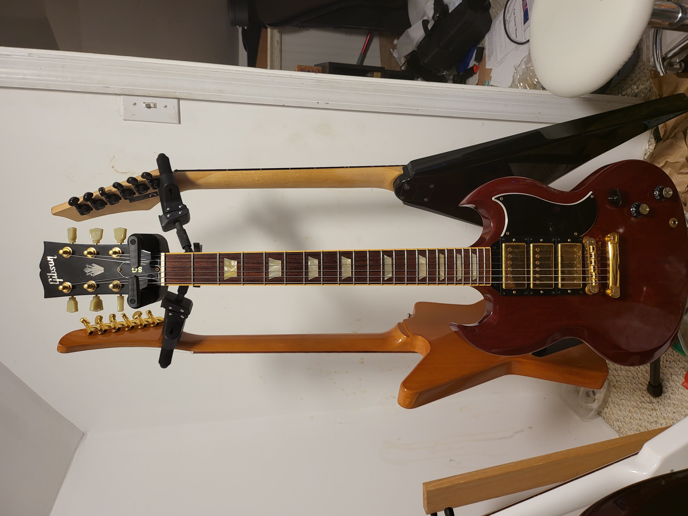
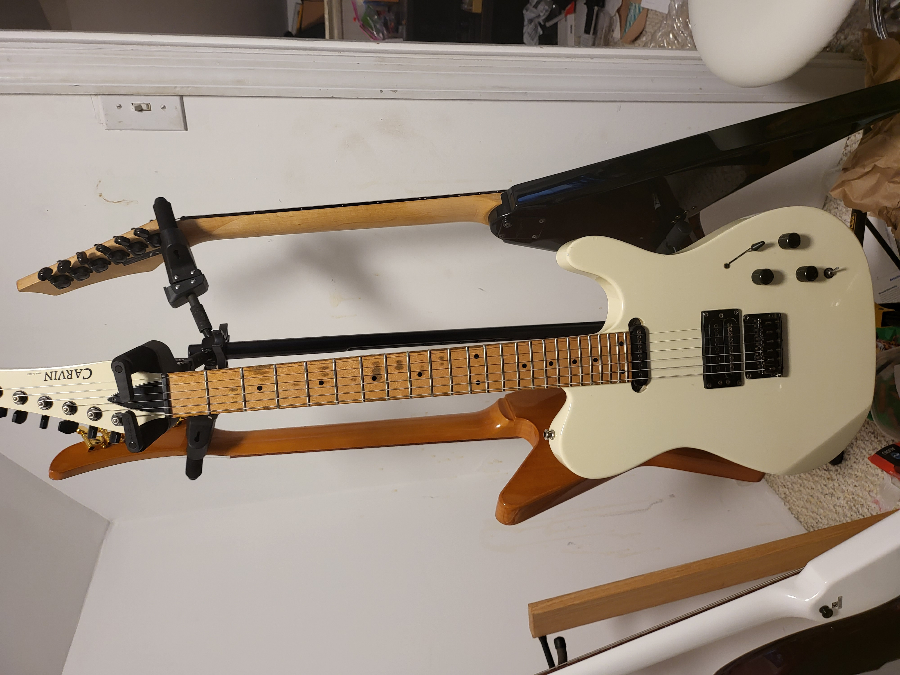
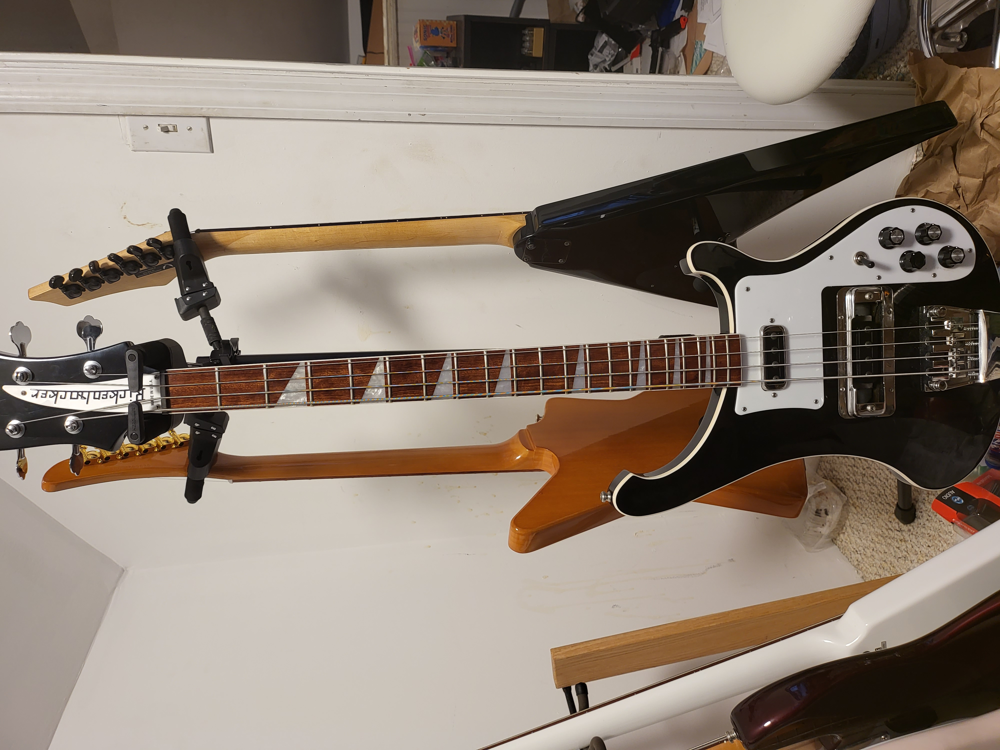

| Name | Description | Image |
|---|---|---|
| Alex Lifeson Les Paul | My favorite guitar! Super cool, with lots of sweet features, like a flyod rose tremolo and a piezo system built in! |
 |
| Gibson SG3 | A super cool guitar with more pickups than usual, it has a very unique sound. |  |
| Carvin T60 | A great guitar that has really cool 12 pole piece pickups, and is my go to when ever i record or play. |
 |
| Rickenbacker 4003 | My Favorite bass, used by many of my biggest influences, including Geddy Lee and Chris Squire! |
 |